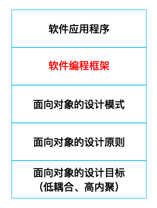
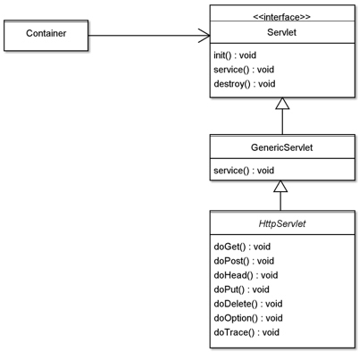
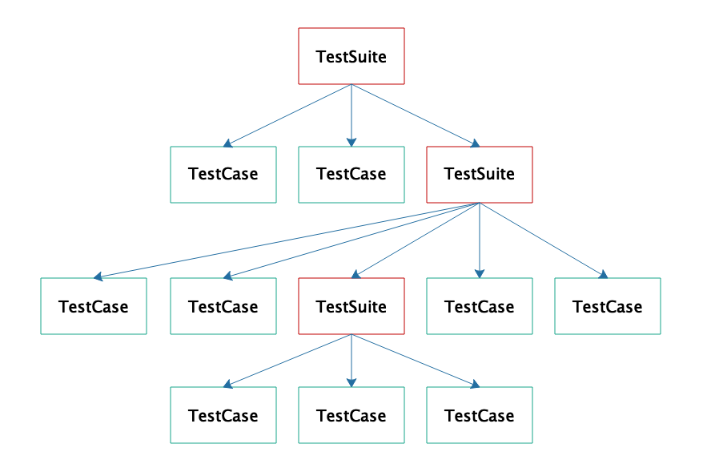

- 00 开篇词 掌握软件开发技术的第一性原理.md.html
- 01 程序运行原理：程序是如何运行又是如何崩溃的？.md.html
- 02 数据结构原理：Hash表的时间复杂度为什么是O(1)？.md.html
- 03 Java虚拟机原理：JVM为什么被称为机器（machine）？.md.html
- 04 网络编程原理：一个字符的互联网之旅.md.html
- 05 文件系统原理：如何用1分钟遍历一个100TB的文件？.md.html
- 06 数据库原理：为什么PrepareStatement性能更好更安全？.md.html
- 07 答疑 Java Web程序的运行时环境到底是怎样的？.md.html
- 07 编程语言原理：面向对象编程是编程的终极形态吗？.md.html
- 08 软件设计的方法论：软件为什么要建模？.md.html
- 09 软件设计实践：如何使用UML完成一个设计文档？.md.html
- 10 软件设计的目的：糟糕的程序员比优秀的程序员差在哪里？.md.html
- 11 软件设计的开闭原则：如何不修改代码却能实现需求变更？.md.html
- 12 软件设计的依赖倒置原则：如何不依赖代码却可以复用它的功能？.md.html
- 13 软件设计的里氏替换原则：正方形可以继承长方形吗？.md.html
- 14 软件设计的单一职责原则：为什么说一个类文件打开最好不要超过一屏？.md.html
- 15 软件设计的接口隔离原则：如何对类的调用者隐藏类的公有方法？.md.html
- 16 设计模式基础：不会灵活应用设计模式，你就没有掌握面向对象编程.md.html
- 17 设计模式应用：编程框架中的设计模式.md.html
- 18 反应式编程框架设计：如何使程序调用不阻塞等待，立即响应？.md.html
- 19 组件设计原则：组件的边界在哪里？.md.html
- 20 答疑 对于设计模式而言，场景到底有多重要？.md.html
- 20 领域驱动设计：35岁的程序员应该写什么样的代码？.md.html
- 21 分布式架构：如何应对高并发的用户请求.md.html
- 22 缓存架构：如何减少不必要的计算？.md.html
- 23 异步架构：如何避免互相依赖的系统间耦合？.md.html
- 24 负载均衡架构：如何用10行代码实现一个负载均衡服务？.md.html
- 25 数据存储架构：如何改善系统的数据存储能力？.md.html
- 26 搜索引擎架构：如何瞬间完成海量数据检索？.md.html
- 27 微服务架构：微服务究竟是灵丹还是毒药？.md.html
- 28 高性能架构：除了代码，你还可以在哪些地方优化性能？.md.html
- 29 高可用架构：我们为什么感觉不到淘宝应用升级时的停机？.md.html
- 30 安全性架构：为什么说用户密码泄漏是程序员的锅？.md.html
- 31 大数据架构：大数据技术架构的思想和原理是什么？.md.html
- 32 AI与物联网架构：从智能引擎到物联网平台.md.html
- 33 区块链技术架构：区块链到底能做什么？.md.html
- 33 答疑 互联网需要解决的技术问题是什么？.md.html
- 34 技术修炼之道：同样工作十几年，为什么有的人成为大厂架构师，有的人失业？.md.html
- 35 技术进阶之道：你和这个星球最顶级的程序员差几个等级？.md.html
- 36 技术落地之道：你真的知道自己要解决的问题是什么吗？.md.html
- 37 技术沟通之道：如何解决问题？.md.html
- 38 技术管理之道：你真的要转管理吗？.md.html
- 38 答疑 工作中的交往和沟通，都有哪些小技巧呢？.md.html
- 加餐 软件设计文档示例模板.md.html
- 结束语 期待未来的你，成为优秀的软件架构师.md.html
- 捐赠
17 设计模式应用：编程框架中的设计模式
在绝大多数情况下，我们开发应用程序的时候，并不是从头开发的。比如，我们用Java开发一个Web应用，并不需要自己写代码监听HTTP 80端口；不需要处理网络传输的二进制HTTP数据包（参考[第4篇网络编程原理]）；不需要亲自为每个用户请求分配一个处理线程（参考[01篇][操作系统原理]），而是直接编写一个Servlet，得到一个HttpRequest对象进行处理就可以了。我们甚至不需要从这个HttpRequest对象中获取请求参数，通过Controller就可以直接得到一个由请求参数构造的对象。
我们写代码的时候，只需要关注自己的业务逻辑就可以了。那些通用的功能，比如监听HTTP端口，从HTTP请求中构造参数对象，是由一些通用的框架来完成的，比如Tomcat或者Spring这些。
什么是框架
框架是对某一类架构方案可复用的设计与实现。所有的Web应用都需要监听HTTP端口，也需要处理请求参数，这些功能不应该在每个Web应用中都被重复开发，而是应该以通用组件的形式被复用。
但并不是所有可被复用的组件都被称作框架，框架通常规定了一个软件的主体结构，可以支撑起软件的整体或者局部的架构形式。比如说，Tomcat完成了Web应用请求响应的主体流程，我们只需要开发Servlet，完成请求处理逻辑，构造响应对象就可以了，所以Tomcat是一个框架。
还有一类可复用的组件不控制软件的主体流程，也不支撑软件的整体架构，比如Log4J提供了一个可复用的日志输出功能，但是，日志输出功能不是软件的主体结构，所以我们通常不称Log4J为框架，而称其为工具。
一般说来，我们使用框架编程的时候，需要遵循框架的规范编写代码。比如Tomcat、Spring、Mybatis、Junit等，这些框架会调用我们编写的代码，而我们编写的代码则会调用工具完成某些特定的功能，比如输出日志，进行正则表达式匹配等。
我在这里强调框架与工具的不同，并不是在咬文嚼字。我见过一些有进取心的工程师宣称自己设计开发了一个新框架，但是这个框架并没有提供一些架构性的规范，也没有支撑软件的主体结构，仅仅只是提供了一些功能接口供开发者调用，实际上，这跟我们对框架的期待相去甚远。
根据我们上面对框架的描述，当你设计一个框架的时候，你实际上是在设计一类软件的通用架构，并通过代码的方式实现出来。如果仅仅是提供功能接口供程序调用，是无法支撑起软件的架构的，也无法规范软件的结构。
那么如何设计、开发一个编程框架？
我在前面讲过开闭原则。框架应该满足开闭原则，即面对不同应用场景，框架本身是不需要修改的，需要对修改关闭。但是各种应用功能却是可以扩展的，即对扩展开放，应用程序可以在框架的基础上扩展出各种业务功能。
同时框架还应该满足依赖倒置原则，即框架不应该依赖应用程序，因为开发框架的时候，应用程序还没有呢。应用程序也不应该依赖框架，这样应用程序可以灵活更换框架。框架和应用程序应该都依赖抽象，比如Tomcat提供的编程接口就是Servlet，应用程序只需要实现Servlet接口，就可以在Tomcat框架下运行，不需要依赖Tomcat，可以随时切换到Jetty等其他Web容器。
要知道，虽然设计原则可以指导框架开发，但是并没有给出具体的设计方法。事实上，框架正是利用各种设计模式开发出来的。编程框架与应用程序、设计模式、设计原则之间的关系如下图所示。

面向对象的设计目标是低耦合、高内聚。为了实现这个目标，人们提出了一些设计原则，主要有开闭原则、依赖倒置原则、里氏替换原则、单一职责原则、接口隔离原则。在这些原则之上，人们总结了若干设计模式，最著名的就是GoF23种设计模式，还有Web开发同学非常熟悉的MVC模式等等。依照这些设计模式，人们开发了各种编程框架。使用这些编程框架，开发者可以简单、快速地开发各种应用程序。
Web容器中的设计模式
前面我们一再提到Tomcat是一个框架，那么Tomcat与其他同类的Web容器是用什么设计模式实现的？代码如何被Web容器执行？程序中的请求对象HttpServletRequest是从哪里来的？
Web容器主要使用了策略模式，多个策略实现同一个策略接口。编程的时候Tomcat依赖策略接口，而在运行期根据不同上下文，Tomcat装载不同的策略实现。
这里的策略接口就是Servlet接口，而我们开发的代码就是实现这个Servlet接口，处理HTTP请求。J2EE规范定义了Servlet接口，接口中主要有三个方法：
public interface Servlet {
public void init(ServletConfig config) throws ServletException;
public void service(ServletRequest req, ServletResponse res)
throws ServletException, IOException;
public void destroy();
}
Web容器Container在装载我们开发的Servlet具体类的时候，会调用这个类的init方法进行初始化。当有HTTP请求到达容器的时候，容器会对HTTP请求中的二进制编码进行反序列化，封装成ServletRequest对象，然后调用Servlet的service方法进行处理。当容器关闭的时候，会调用destroy方法做善后处理。
当我们开发Web应用的时候，只需要实现这个Servlet接口，开发自己的Servlet就可以了，容器会监听HTTP端口，并将收到的HTTP数据包封装成ServletRequest对象，调用我们的Servlet代码。代码只需要从ServletRequest中获取请求数据进行处理计算就可以了，处理结果可以通过ServletResponse返回给客户端。
这里Tomcat就是策略模式中的Client程序，Servlet接口是策略接口。我们自己开发的具体Servlet类就是策略的实现。通过使用策略模式，Tomcat这样的Web容器可以调用各种Servlet应用程序代码，而各种Servlet应用程序代码也可以运行在Jetty等其他的Web容器里，只要这些Web容器都支持Servlet接口就可以了。
Web容器完成了HTTP请求处理的主要流程，指定了Servlet接口规范，实现了Web开发的主要架构，开发者只要在这个架构下开发具体Servlet就可以了。因此我们可以称Tomcat、Jetty这类Web容器为框架。
事实上，我们开发具体的Servlet应用程序的时候，并不会直接实现Servlet接口，而是继承HttpServlet类，HttpServlet类实现了Servlet接口。HttpServlet还用到了模板方法模式，所谓模板方法模式，就是在父类中用抽象方法定义计算的骨架和过程，而抽象方法的实现则留在子类中。
这里，父类是HttpServlet，HttpServlet通过继承GenericServlet实现了Servlet接口，并在自己的service方法中，针对不同的HTTP请求类型调用相应的方法，HttpServlet的service方法就是一个模板方法。
protected void service(HttpServletRequest req, HttpServletResponse resp) throws ServletException, IOException
{
String method = req.getMethod();
if (method.equals(METHOD_GET)) {
doGet(req, resp);
} else if (method.equals(METHOD_HEAD)) {
long lastModified = getLastModified(req);
maybeSetLastModified(resp, lastModified);
doHead(req, resp);
} else if ...
由于HTTP请求有get、post等7种请求类型，为了便于编程，HttpServlet提供了这7种HTTP请求类型对应的执行方法doGet、doPost等等。service模板方法会判断HTTP请求类型，根据不同请求类型，执行不同方法。开发者只需要继承HttpServlet，重写doGet、doPost等对应的HTTP请求类型方法就可以了，不需要自己判断HTTP请求类型。Servlet相关的类关系如下：

JUnit中的设计模式
JUnit是一个Java单元测试框架，开发者只需要继承JUnit的TestCase，开发自己的测试用例类，通过JUnit框架执行测试，就得到测试结果。
开发测试用例如下：
public class MyTest extends TestCase {
protected void setUp(){
...
}
public void testSome(){
...
}
protected void tearDown(){
...
}
}
每个测试用例继承TestCase，在setUp方法里做一些测试初始化的工作，比如装载测试数据什么的；然后编写多个以test为前缀的方法，这些方法就是测试用例方法；还有一个tearDown方法，在测试结束后，进行一些收尾的工作，比如删除数据库中的测试数据等。
那么，我们写的这些测试用例如何被JUnit执行呢？如何保证测试用例中这几个方法的执行顺序呢？JUnit在这里也使用了模板方法模式，测试用例的方法执行顺序被固定在JUnit框架的模板方法里。如下：
public void runBare() throws Throwable {
setUp();
try{
runTest();
}
finally {
tearDown();
}
}
runBare是TestCase基类里的方法，测试用例执行时实际上只执行runBare模板方法，这个方法里，先执行setUp方法，然后执行各种test前缀的方法，最后执行tearDown方法。保证每个测试用例都进行初始化及必要的收尾。而我们的测试类只需要继承TestCase基类，实现setUp、tearDown以及其他测试方法就可以了。
此外，一个软件的测试用例会有很多，你可能希望执行全部这些用例，也可能希望执行一部分用例，JUnit提供了一个测试套件TestSuit管理、组织测试用例。
public static Test suite() {
TestSuite suite = new TestSuite("all");
suite.addTest(MyTest.class);//加入一个TestCase
suite.addTest(otherTestSuite);//加入一个TestSuite
return suite;
}
TestSuite可以通过addTest方法将多个TestCase类加入一个测试套件suite，还可以将另一个TestSuite加入这个测试套件。当执行这个TestSuite的时候，加入的测试类TestCase会被执行，加入的其他测试套件TestSuite里面的测试类也会被执行，如果其他的测试套件里包含了另外一些测试套件，也都会被执行。
这也就意味着TestSuite是可以递归的，事实上，TestSuite是一个树状的结构，如下：

当我们从树的根节点遍历树，就可以执行所有这些测试用例。传统上进行树的遍历需要递归编程的，而使用组合模式，无需递归也可以遍历树。
首先，TestSuite和TestCase都实现了接口Test：
public interface Test {
public abstract void run(TestResult result);
}
当我们调用TestSuite的addTest方法时，TestSuite会将输入的对象放入一个数组：
private Vector<Test> fTests= new Vector<Test>(10);
public void addTest(Test test) {
fTests.add(test);
}
由于TestCase和TestSuite都实现了Test接口，所以addTest的时候，既可以传入TestCase，也可以传入TestSuite。执行TestSuite的run方法时，会取出这个数组的每个对象，分别执行他们的run方法：
public void run(TestResult result) {
for (Test each : fTests) {
test.run(result);
}
}
如果这个test对象是TestCase，就执行测试；如果这个test对象是一个TestSuite，那么就会继续调用这个TestSuite对象的run方法，遍历执行数组的每个Test的run方法，从而实现了树的递归遍历。
小结
人们对架构师的工作有一种常见的误解，认为架构师做架构设计就可以了，架构师不需要写代码。事实上，架构师如果只是画画架构图，写写设计文档，那么如何保证自己的架构设计能被整个开发团队遵守、落到实处？
架构师应该通过代码落实自己的架构设计，也就是通过开发编程框架，约定软件开发的规范。开发团队依照框架的接口开发程序，最终被框架调用执行。架构师不需要拿着架构图一遍一遍讲软件架构是什么，只需要基于框架写个Demo，大家就都清楚架构是什么了，自己应该如何做了。
所以每个想成为架构师的程序员都应该学习如何开发框架。
思考题
在Tomcat和JUnit中，还使用了其他一些设计模式，在哪些地方使用什么设计模式，解决什么问题？你了解吗？
欢迎你在评论区写下你的思考，我会和你一起交流，也欢迎你把这篇文章分享给你的朋友或者同事，一起交流一下。
© 2019 - 2023 Liangliang Lee. Powered by gin and hexo-theme-book.